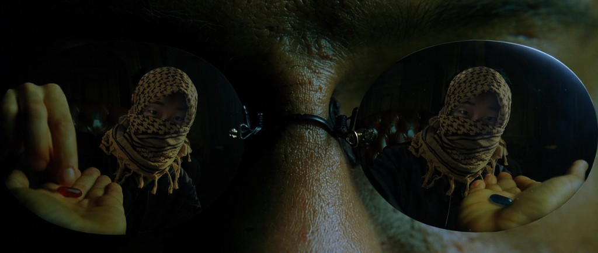

01Mission
This is the red route. This page holds my real thoughts, direction, work record, and declarations.
여기는 레드 루트다. 이 페이지에는 나의 실제 생각·방향·작업 기록·선언이 담긴다.
02Directives
Observe. Connect. Infer. Build.
관찰하고, 연결하고, 추론하고, 만든다.
I look for patterns, pressure points, and hidden leverage.
패턴·압박 지점·숨은 레버리지를 찾는다.
Noise hides truth. I look for signal.
소음은 진실을 가린다. 나는 신호를 찾는다.
03Execution
I build, test, refine, and repeat.
만들고, 시험하고, 다듬고, 반복한다.
04Next Move
From optimization to automation. From automation to scale.
최적화에서 자동화로, 자동화에서 확장으로 간다.